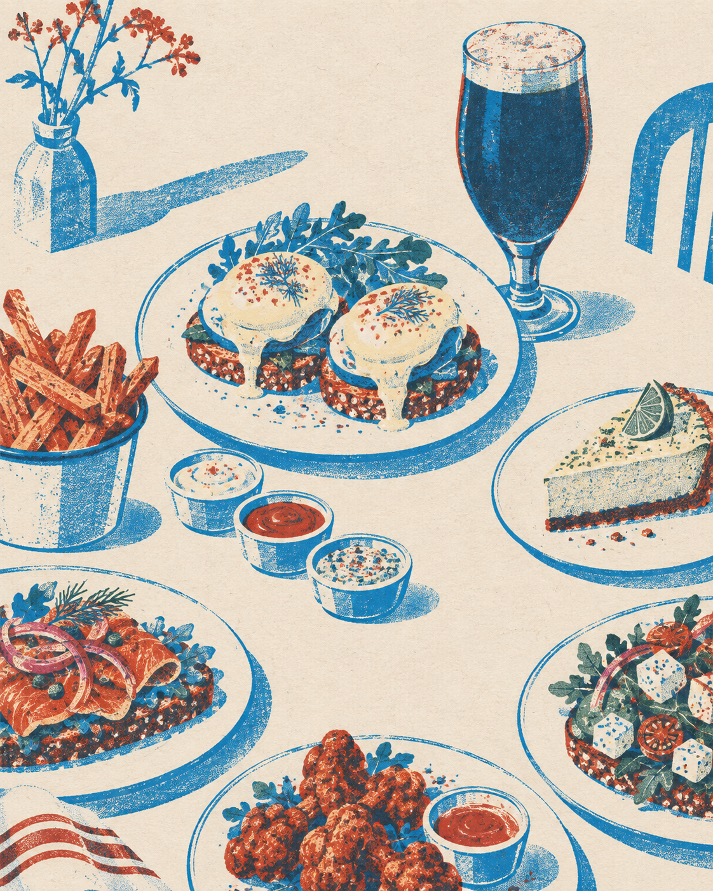
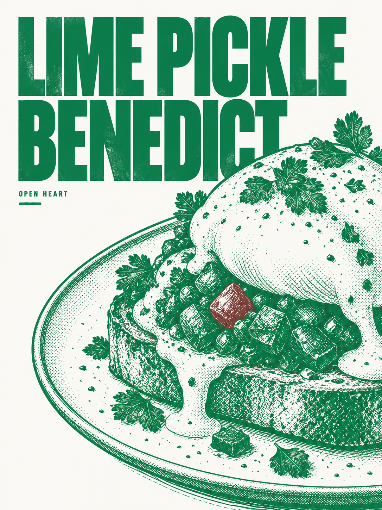
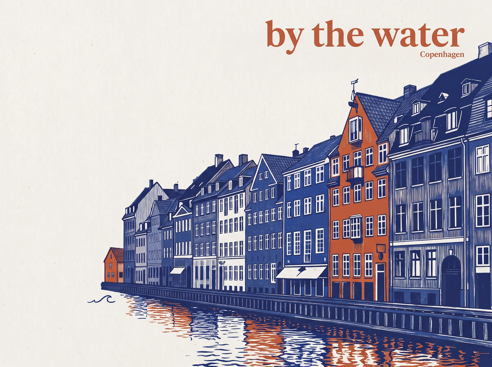
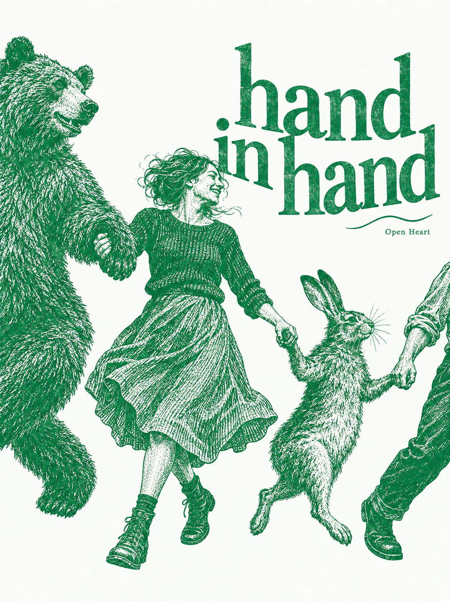

01
Avocado Benedict
Avocado, vegan egg, vegan hollandaise.
VeganUncheck for the CSS 3D experiment. Image inks stay faithful to their generation recipe.
View the asset archive ->Original plant-based food and coffee
Open Heart is a vegetarian place for original plant-based creations. Start with vegan eggs Benedict, stay for the feeling that imagination can become something real, generous, and delicious.
See the signature ->
The signature
A familiar shape, remade with enough nerve to become new. Vegan eggs Benedict with avocado, lime pickle, or chipotle: three invitations to discover what a plant-based plate can do.
Then follow the thread through bright salads, open sandwiches, serious sauces, and drinks that make staying feel like part of the order.
Explore the menu ->
A Copenhagen point of view
Open Heart brings a little theatre to the everyday table: plates that reward curiosity, coffee that invites another ten minutes, and a room with enough space for an unusual idea to land.
Copenhagen gives the idea its rhythm: clear light, quick bicycles, long coffee, and a city that knows how to make a small room feel like a destination.


A few lines for the room.
A small shape made of wordsCome by
Come for the plate you cannot quite explain. Stay for the coffee, the second sauce, and the people at the next table.
Come curious. Leave with something you did not know you were looking for.
Start again ->